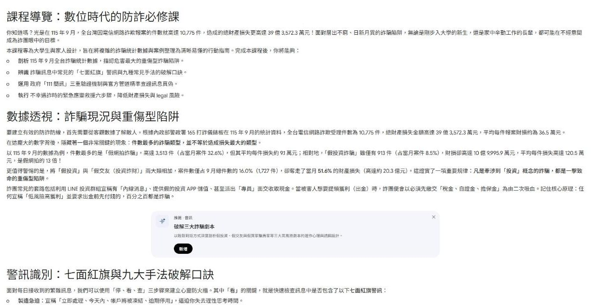
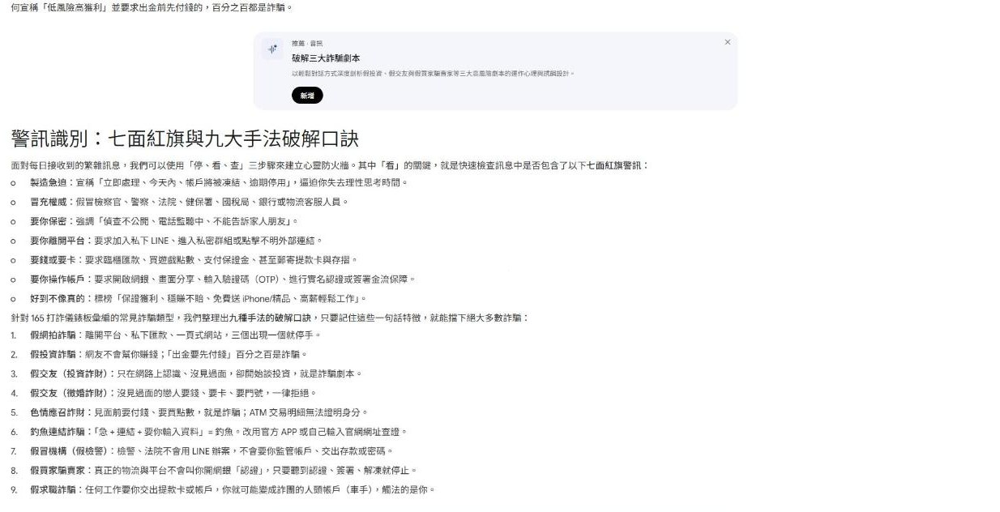
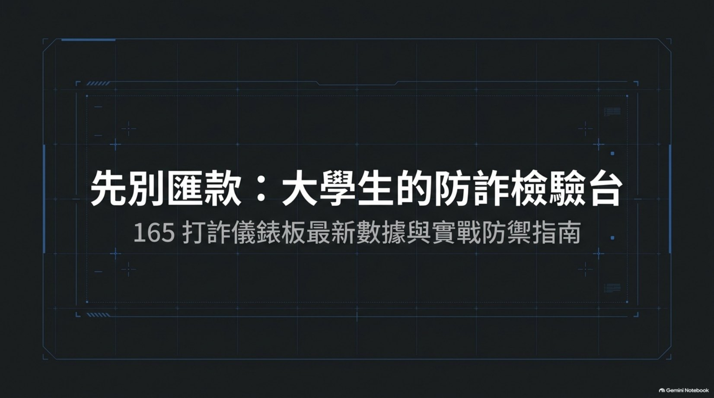

收到這種訊息，
先別匯款。
把可疑的簡訊、LINE、私訊貼進來，檢驗台會用螢光筆標出詐騙紅旗，告訴你它最像哪一種 165 列管的手法，以及現在該做什麼。
● 分析全部在你的瀏覽器裡完成，訊息不會上傳到任何地方訊息原文 可直接修改或貼上你收到的訊息
範例訊息是依 165 公布的話術改寫，人名、帳號與網址都是虛構的。
鑑定結果
你分得出來嗎？
十則訊息裡有真有假。真的訊息不會叫你點連結、付錢或加 LINE，假的訊息通常至少踩中一面紅旗。每題作答後都可以丟進檢驗台看批改。
件數最多的，不是傷最重的
165 打詐儀錶板公布的 9 月數據。假網拍最常見，但平均每件只損失約 9 萬元；牽涉「投資」的兩種手法，平均每件超過 110 萬元。
投資類詐騙只占 16.0% 的案件，卻造成 51.6% 的財損
資料：內政部警政署 165 打詐儀錶板，115 年 9 月詐騙手法前 5 名（網站更新日期 115-10-14）。平均每件損失與占比為本頁依官方數字自行計算。
手法圖鑑
每一種手法都有固定劇本。下面的話術摘自 165 打詐儀錶板「我被詐騙了嗎？」，最後一行是一句話的破解口訣。
用聽的、用看的
把同一份 165 官方資料交給 Gemini Notebook，做成說明影片、雙主持人 Podcast、資訊圖表、心智圖、互動式報告和一份上台用的簡報。適合轉給不愛讀長文的家人。除了 Podcast 之外，每一項都對照官方數字查核過，查到的錯誤直接寫在下面。
說明影片：先別匯款：防詐說明影片（修正版）
影片摘要 · 說明影片格式 · 白板風格 · 7 分 41 秒
查核紀錄：第一版影片把 9 月財損畫成「35 億」，官方數字是 39 億 3,572.3 萬元。當時額度用完，先加上更正字卡；額度重設後，用寫明「必須寫成 39.36 億」的提示詞重新生成，這一版的 39.36 億、10,775 件、9.1 萬與 120.5 萬都正確。剩下的小瑕疵：圓餅圖旁的說明文字把 Markdown 的「**」符號直接顯示出來。
Podcast：破解三大詐騙劇本
語音摘要 · 深入探索格式 · 兩位 AI 主持人對談 · 23 分 01 秒
提示詞要求主持人演三個情境：二手社團的假買家要你「簽署金流」、假檢警叫你加 LINE 做筆錄、熟人換號碼借錢。
互動式報告：《先別匯款：防詐學習總覽》
報告 · 互動式學習總覽 · 5 章 · 內嵌 Podcast、資訊圖表與心智圖


查核紀錄：報告裡的 10,775 件、39 億 3,572.3 萬元、平均每件 9.1 萬與 120.5 萬、16.0%／51.6% 都與 165 官方數字一致。產生時特別指示它不要內嵌數字有誤的舊版影片。唯一瑕疵是一句話混入了英文「legal」。
簡報投影片：大學生防詐實戰指南
簡報 · 簡報投影片格式 · 10 頁 · 可用左右鍵翻頁

查核紀錄：10 頁的數字都和官方一致（39 億 3,572.3 萬元、16.0%／51.6%、**21* 與 ##21#）。最後一頁原本有一個寫著「掃描進入 165 打詐儀錶板」的 QR Code，用 OpenCV 檢查後發現它只是 AI 畫出來的圖案，偵測得到定位點卻無法解碼。防詐簡報放一個掃不出來、號稱官方的 QR Code 並不妥當，所以改放一個真的、連到 https://165dashboard.tw/ 的 QR Code，並在畫面上標註為後製替換。替換後已解碼驗證。
Gemini Notebook 的三份來源文件：165 詐騙手法與話術彙編、115 年 9 月統計與最新案例、官方查證管道與自保守則。每項產出的自訂提示詞都記錄在〈歷程說明〉裡。筆記本原件：Gemini Notebook「台灣常見詐騙手法與防範話術彙編」。
被騙了怎麼辦
越早通報，攔下款項的機會越大。依 165 打詐儀錶板，115 年 8 月一個月就攔阻了 8 億 2,702.3 萬元的詐騙款項。
反詐騙諮詢專線，免付費。也可以加 165 官方 LINE 詢問。要報案請撥 110 或到最近的派出所。
- 立刻停止聯絡不要再匯任何一筆「解凍金」「手續費」「保證金」。對方說錢會退回，是為了讓你繼續付。
- 打給 165 或 110說明對方帳號、匯款時間與金額。到派出所報案時帶著手機。
- 打給你的銀行用卡片背面的客服電話，通報被騙、申請止付、掛失卡片、改網銀密碼。
- 保留證據對話截圖、對方 LINE ID 與帳號、匯款收據、網址都留著，不要刪除對話。
- 檢查電話轉接被要求撥過 **21* 的話，撥 ##21# 取消無條件轉接，再打給電信業者確認。
- 交出卡片要掛失寄出過提款卡、存摺或 SIM 卡，立刻掛失並報案，避免帳戶被當成人頭帳戶。
資料來源與限制
官方資料（擷取於 2026-10-14）
- 內政部警政署 165 打詐儀錶板：115 年 9 月統計、最新案例
- 165 打詐儀錶板「我被詐騙了嗎？」：各類手法話術
- 165 全民防騙網：涉詐資訊公告、常見問答
- 數位發展部：111 簡訊新增手機末三碼與機關具名（2025-06-17）
這個工具的限制
- 檢驗台用關鍵字規則比對 165 公布的話術，不是 AI 判讀。詐團換一套說法就可能漏掉，所以「沒有紅旗」不代表安全。
- 111 簡訊的實際排版以發送機關為準，範例中的末三碼格式為示意。
- 範例與測驗訊息是改寫的虛構內容，網址與帳號皆不存在，請勿嘗試連線。
- 真正要判斷時，請撥 165 查證。